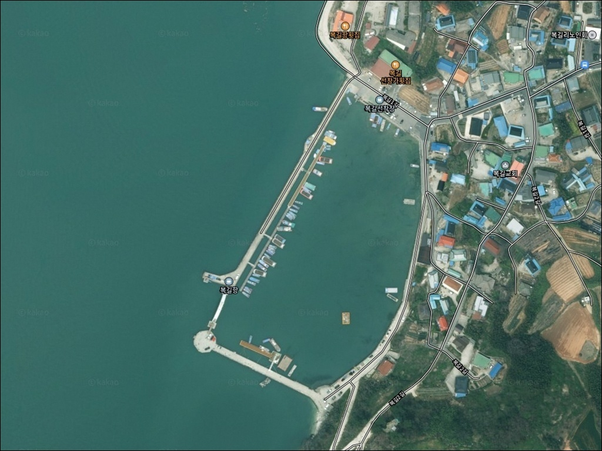
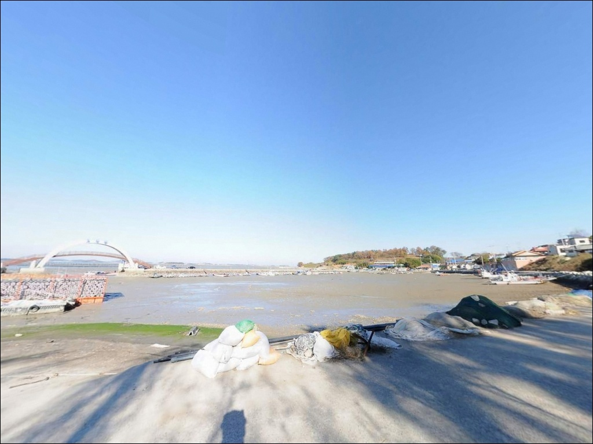
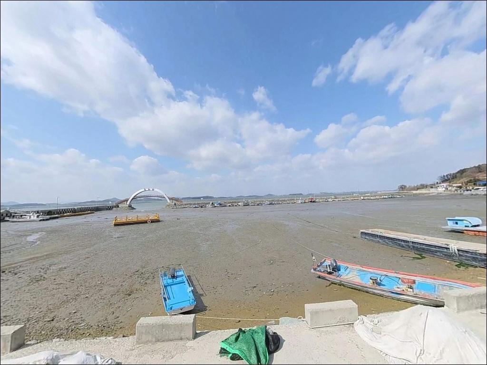
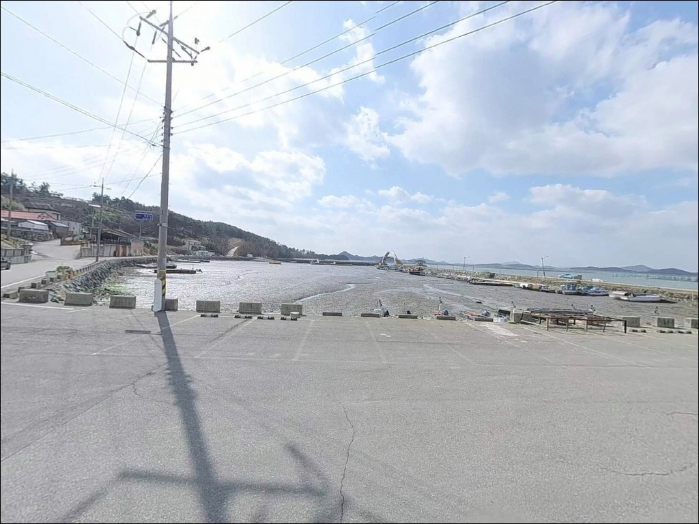
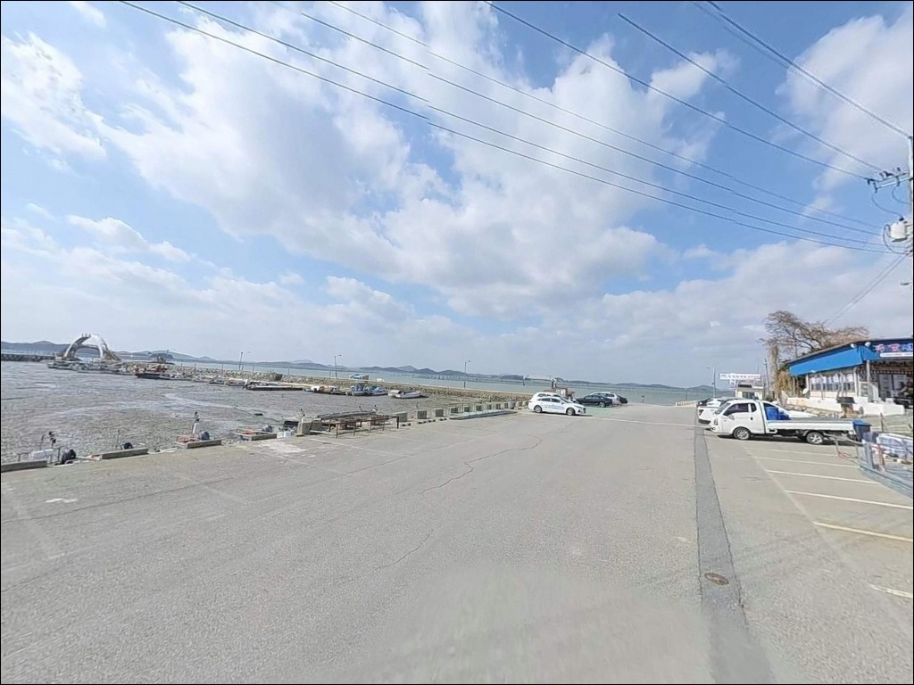
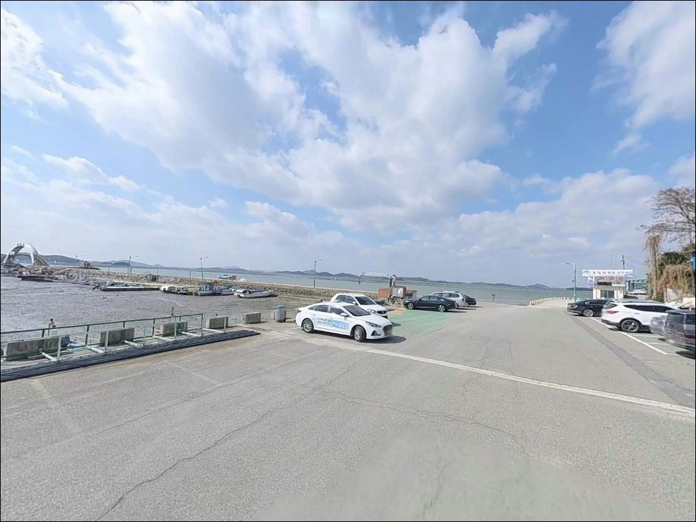
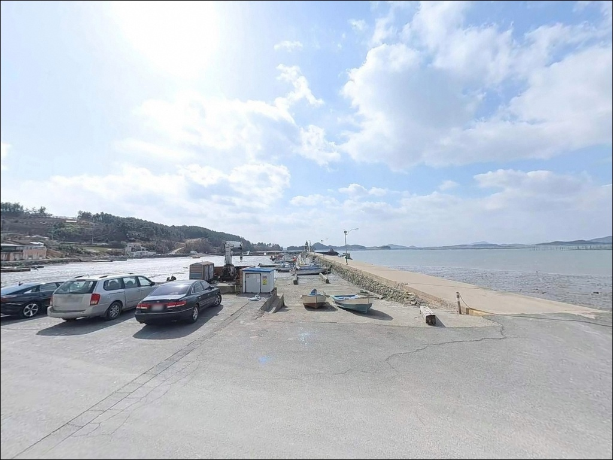
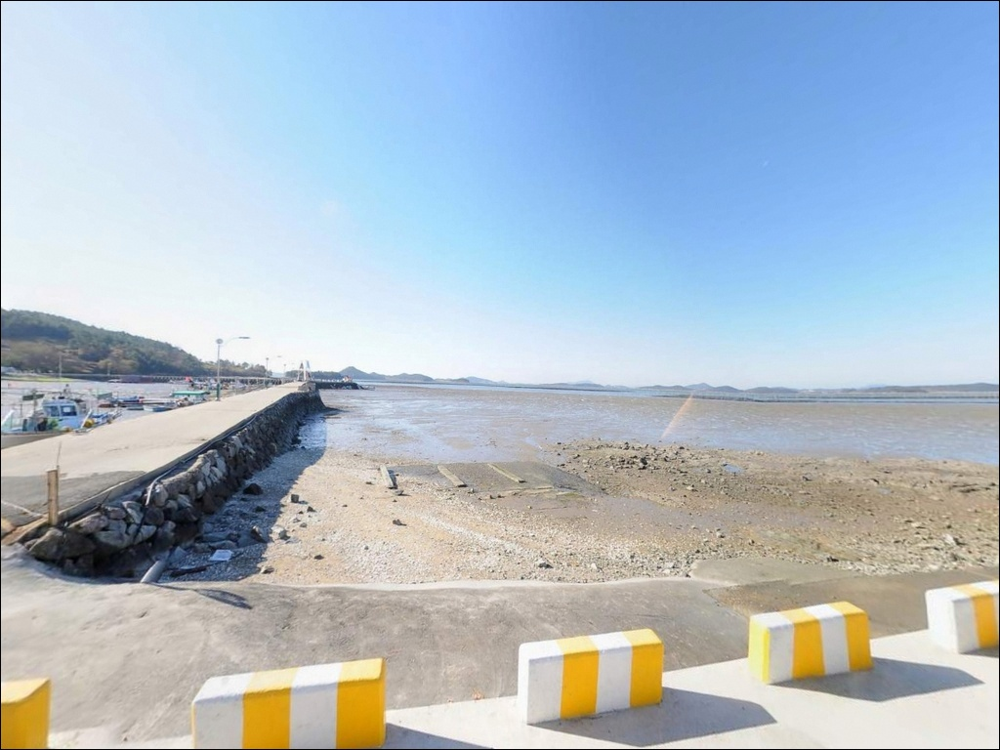
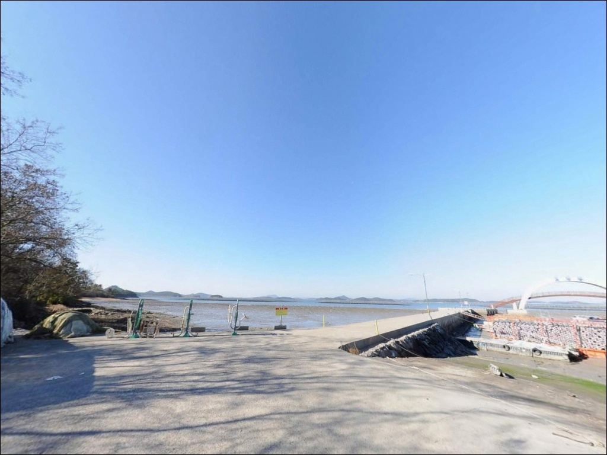

이 페이지에는 광고(제휴 링크 포함)가 있으며, 광고 링크를 통해 구매하면 운영자가 판매 수익 또는 수수료를 받을 수 있습니다. 포인트 사진: 카카오맵 스카이뷰·로드뷰. 이 페이지의 지도·사진 이미지는 카카오맵의 실제 서비스 이미지와 다를 수 있습니다.


복길항, 복길선착장, 전남 무안군 잔잔한 물결과 어울리는 차박, 낚시 한적한 포인트
포인트 안내
복길항
전남 무안군 청계면 복길리 470-5
복길항에서 가장 많이 틀리는 판단은
물때와 무관하게 아무 때나 진입하는 것입니다.
갯벌 기반 내만 구조라 간조 전후에는
방파제 앞 수심이 크게 빠져
채비가 닿을 자리 자체가 사라집니다.
만조 전후 타이밍을 잡지 않으면
아무리 좋은 채비도 힘을 쓰기 어렵습니다.
이 글은 복길항의 진입 동선,
물때 판단 기준, 낚시 지형 조건,
스타일별 공략 방향에 집중합니다.
조황 단정이나 특정 어종 보장은
이 글의 범위에 포함되지 않습니다.

1. 진입 동선과 복길항 접근성
825번 지방도에서 복길리 마을 안쪽으로
이어지는 진입로는 도로 개선 이후
차량 진입이 수월해진 구조입니다.
소형 어촌 마을 진입도로 특성상
대형 차량이라면 진입 전 도로 폭을 미리 확인하는 것이
기본 판단 기준입니다.
항 내부는 내항과 외항이 나뉘며,
두 방파제를 잇는 아치형 전망 구름다리가
설치된 구조입니다.
어선 접안 공간과 낚시 자리가 혼재하는 형태라
도착 후 어선 이동 동선을 먼저 파악하고
자리를 잡는 편이 기본 매너입니다.
주차는 별도의 공식 주차면 없이
항 주변 공터나 방파제 초입 도로변을
상황에 맞게 활용하는 방식입니다.
어선 진출입을 막지 않는 위치가
우선 조건이며,
주차 가능 공간이 넉넉하지 않을 수 있어
도착 후 현장 상황을 먼저 확인하는 것이 안전합니다.

2. 차박 환경과 야간 체류 여건
복길리는 민가 밀집도가 낮은 소규모 어촌 마을 구조로,
야간에는 차량 통행이 거의 없는 편입니다.
외항 쪽이 서해를 향해 열려 있어
기상에 따라 바람 영향을 받을 수 있는 구조이며,
출발 당일 기상 예보를 다시 한번 확인하는 것이
야간 체류 준비의 기본입니다.
복길항은 서해 노을 포토스팟으로 알려진 곳이어서
해 질 무렵에는 방문객이 있을 가능성이 있습니다.
야간으로 넘어갈수록 한적해지는 편이지만,
가로등이 방파제 끝단까지 고르게 갖춰져 있지 않으므로
개인 조명 장비는 필수입니다.
차박을 겸하려면 항 주변 공터의
차량 대기 가능 여부를 현장에서 직접 확인해야 합니다.
주차 공간이 제한적인 소형 어항 구조라
짧게 머무는 방식으로 계획하는 것이
현실적인 접근입니다.


3. 주변 편의시설 및 인프라 현황
복길리 항 인근에는 복길선창가횟집과
해변활어타운이 운영되고 있습니다.
해변활어타운은 평일 기준 낮 11시부터
저녁 9시까지 운영이 확인된 곳으로,
현장에서 식사 해결이 가능한 구조입니다.
편의점이나 대형 마트는
청계면 소재지 방향으로 이동해야 이용이 가능합니다.
청계면 도림리에 목대낚시마트가 위치해 있어
낚시 소품 보충은 이 동선을 활용하는 것이
효율적입니다.
식수, 얼음, 연료는 출발 전에 갖추고 오는 것이
기본 준비입니다.

4. 복길항 방문 전 챙겨야 할 준비사항
복길항 방문 전 가장 먼저 확인할 것은
물때입니다.
청계만 안쪽 갯벌 기반 지형이라
간조 전후에는 수심이 크게 빠지고
바닥이 드러나는 구간이 생깁니다.
바다타임에서 무안 청계면 기준 물때를 확인하고,
만조 전후 2~3시간을 집중 낚시 시간으로 계획하는 것이
이 포인트의 기본 전략입니다.
사리 전후에는 조류가 빠른 청계만 특성상
채비 유실이 잦을 수 있습니다.
여분 채비를 넉넉히 준비하고,
기상청 예보는 출발 당일 아침에
다시 한번 확인하는 것이 포인트 낭비를 막는 조건입니다.
어촌정주어항이란
어촌 주민의 생산 활동과 정주 생활을 지원하기 위해
국가가 지정·관리하는 소규모 어항 유형입니다.
복길항은 2005년 이 유형으로 지정된 어항으로,
어선 이동 동선과 어구에 접촉하지 않는 것이
소형 정주어항에서의 기본 매너입니다.
야간 낚시 시에는 구명조끼와 헤드랜턴을
반드시 챙겨야 합니다.
방파제 길이가 긴 편이 아니라
파도가 넘칠 수 있는 날에는
끝단 진입을 자제하는 것이 안전합니다.

5. 간조에 수심이 빠지는 갯벌 지형, 낚시 여건 판단하기
복길항의 핵심 지형 특성은
갯벌 기반의 내만형 어항이라는 점입니다.
외항 쪽 방파제 끝단과 물골 방향이
간조에도 수심이 상대적으로 유지되는 구간이며,
이 자리가 원투 채비가 효과적으로 닿을 수 있는
이 포인트의 핵심 자리입니다.
청계만 앞바다의 조류는 조금 전후에
흐름이 안정되고 사리 전후로 빨라지는 패턴입니다.
조금 전후 타이밍과 만조 시간을 겹쳐서 계획하면
이 포인트에서 낚시 효율이 올라갑니다.
물때 계산 없이 사리 전후에 입장하면
조류가 너무 강해 채비 컨트롤이 어려워질 수 있습니다.
내항은 어선이 정박하고 양식 작업이 이루어지는 공간이라
채비 걸림과 어선 동선 간섭 가능성이 높습니다.
외항 방파제 바깥쪽이 낚시 자리로 무난한 구조이며,
방파제 끝단에서 갯골 방향으로 채비를 던지는 방식이
이 지형에 맞는 기본 접근입니다.
출조 전 "복길항 낚시" 또는
"무안 청계면 방파제 낚시"로
최신 조황을 검색해 보시기 바랍니다.


6. 복길항에 어울리는 낚시 스타일
이 포인트에서 가장 기본적인 낚시 방식은
원투낚시입니다.
갯벌과 완만한 바닥 구조에서
갯지렁이 미끼를 이용한 원투낚시는
붕장어와 망둥어류를 기대해 볼 수 있는
이 해안선 권역에서 일반적인 공략 방식입니다.
만조 전후에 외항 끝단 방향으로
원거리 캐스팅하는 것이 기본 접근입니다.
릴찌낚시도 이 포인트 지형과 어울립니다.
수로 방향 조류 흐름이 살아 있는 구간에서
먼 거리까지 채비를 보내는 릴찌낚시는
감성돔 시즌에 방파제 꺾이는 지점 주변에서
시도해볼 수 있는 방식입니다.
가을에서 초겨울 수온이 안정되는 시기에
적용해 보기 좋습니다.
루어낚시도 가능성이 있는 방식입니다.
선착장 내항과 외항 경계 구간에서
농어나 숭어를 대상으로 시도해 볼 수 있으며,
갑오징어와 주꾸미는 조류 흐름이 형성되는
만조 전후 타이밍에 방파제 끝단 쪽을
탐색해볼 만한 대상 어종입니다.

7. 대안 포인트와 플랜 B 동선
복길항 물때가 맞지 않거나
주차 여건이 여의치 않을 때
첫 번째 대안은 구로리 방파제입니다.
같은 청계면 해안선 북쪽에 위치하며
동일한 청계만 물때 조건을 공유합니다.
복길항보다 낚시 후기가 상대적으로 많은 포인트라
사전 정보 파악이 수월합니다.
조금 더 이동할 여건이 된다면
무안 톱머리 방파제도 고려해볼 수 있습니다.
갑오징어, 주꾸미 낚시로 알려진 청계면 대표 포인트이며,
해수욕장 인근이라 주차 여건이 상대적으로 나은 편입니다.
복길항을 처음 방문하는 경우라면
구로항과 복길항을 함께 묶어
청계만 해안선을 탐색하는 동선이
이 권역에서 가장 효율적인 이동 방식입니다.

만조 타이밍 하나로
복길항이 달라 보입니다
원투낚시나 릴찌낚시를 즐기는 낚시인이라면
복길항의 지형 조건은 나쁘지 않습니다.
다만 갯벌 기반 내만형 어항 특성상
물때를 무시하고 방문하면
낚시 자리 자체를 만들기 어렵습니다.
물때 확인, 만조 타이밍 계획, 진입 동선 파악,
이 세 가지를 갖추고 가면
조용히 앉아 하루를 보내기 좋은 포인트입니다.
편의시설이 없는 소형 어항이라
완전 자급 준비가 필요하지만,
그만큼 한적한 분위기를 원하는 낚시인에게는
잘 맞는 포인트입니다.
서해 노을이 좋은 날 방파제에서 원투 채비 하나 던져 두고
하늘이 붉어지는 것을 바라보는 차박이라면,
만조 타이밍만 잘 맞추면
낚시와 풍경 둘 다 건질 수 있는 출조가 됩니다.